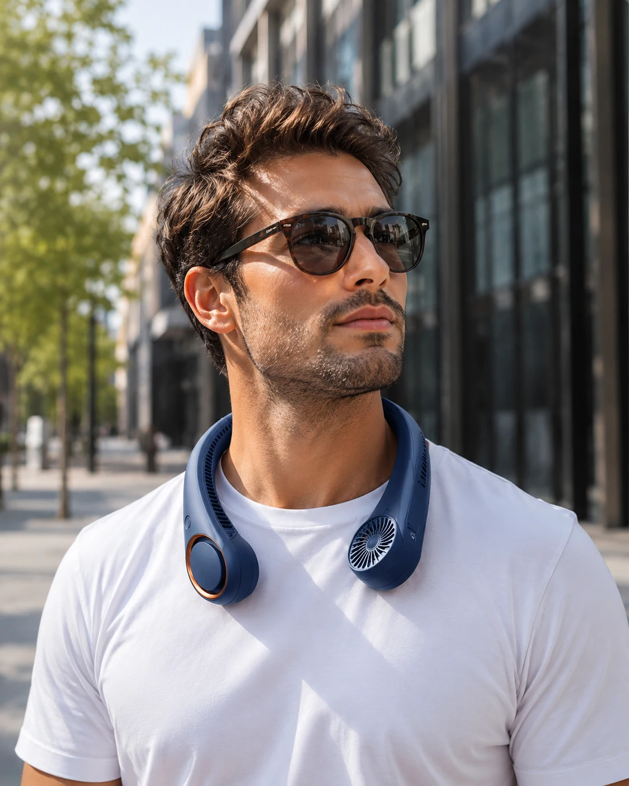

Autour du cou
Le format mains libres se porte naturellement pour accompagner les transports, le bureau ou une balade.
Ventilation personnelle · Été 2026
Un souffle personnel, léger et discret.
Découvrir Coolera
COOLORA AIR ONE · en détail
Le format mains libres se porte naturellement pour accompagner les transports, le bureau ou une balade.
Les deux modules latéraux dirigent un flux d’air personnel vers le cou et le visage.
Une construction légère et des branches flexibles pour rester agréable pendant vos journées d’été.
Trois niveaux permettent d’adapter le souffle et l’autonomie au moment de la journée.
Une brise qui vous suit
 Terrasse
Terrasse
BaladeConçu pour bouger
À votre rythme
Jusqu’à 6 h
Jusqu’à 3,5 h
Jusqu’à 2 h
Votre nuance
WhiteUne finition douce, pensée pour l’été.
Des données claires
Simple à emporter
Son format compact, ses branches flexibles et son système d’organisation des fils facilitent le rangement dans un sac. Une pochette compacte peut l’accompagner sans alourdir vos déplacements.
Coolera · Cooling Neck Fan
80 €